Installation
1. Flush the ATF cooler.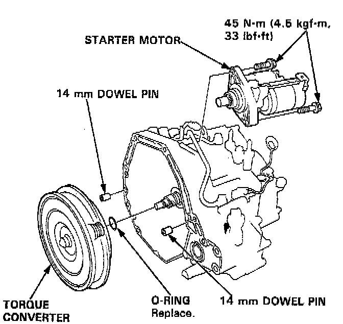
2. Install the starter motor on the transmission housing, then install the two 14 mm dowel pins in the torque converter housing. Install the torque converter assembly securely with a new O-ring on the mainshaft.
3. Place the transmission on a transmission jack, and raise it to the engine level.
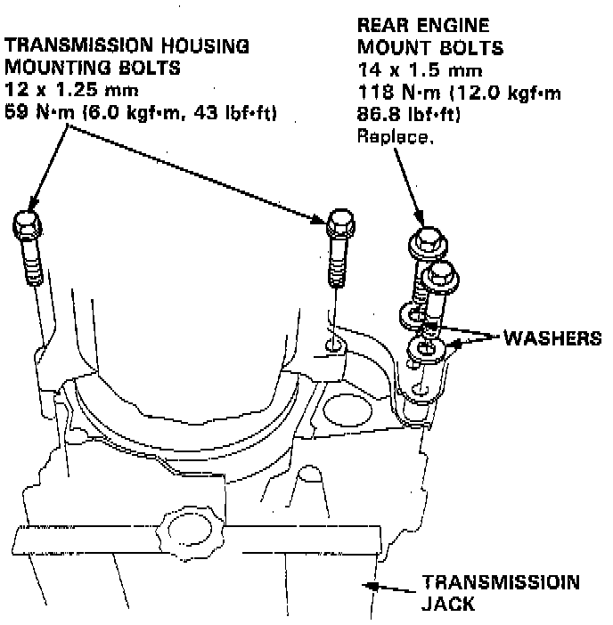
4. Attach the transmission to the engine, then install the transmission housing mounting bolts and two rear engine mounting bolts with new washers.
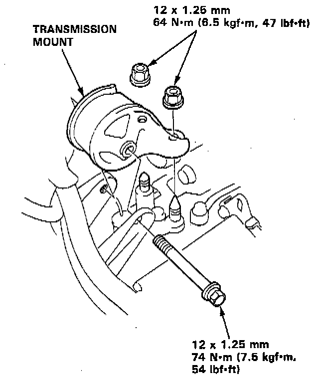
5. Install the transmission mount.
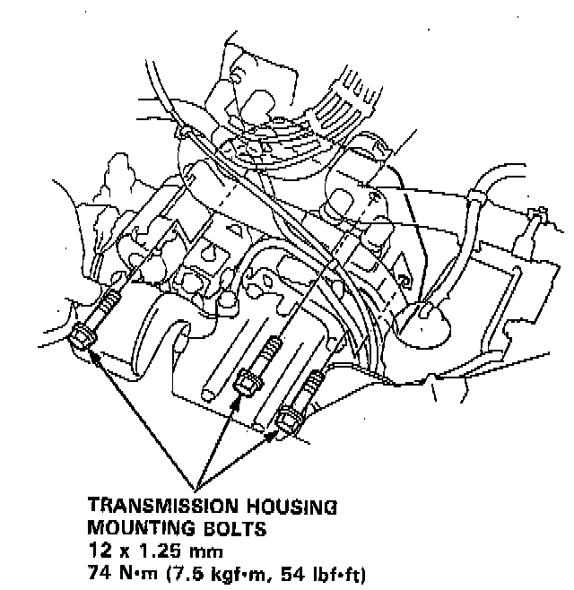
6. Install the transmission housing mounting bolts.
7. Remove the transmission jack.
8. Attach the torque converter to the drive plate with eight bolts and torque as follows: Rotate the crankshaft as necessary to tighten the bolts to 1/2 of the specified torque, then to the final torque, in a crisscross pattern. After tightening the last bolts, check that the crankshaft rotates freely.
- TORQUE: 12 Nm (8.7 ft. lbs.).
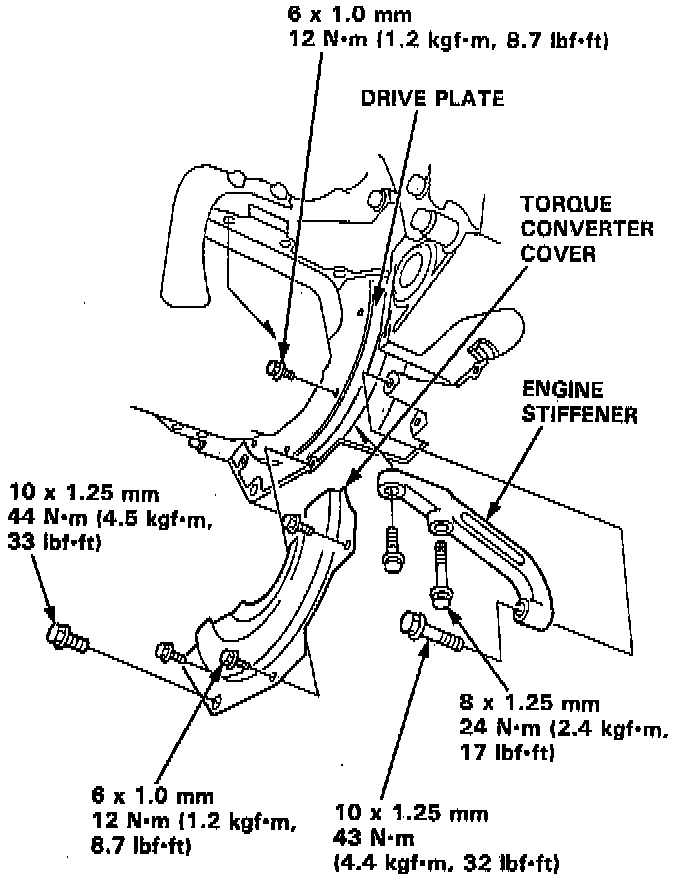
9. Install the torque converter cover and engine stiffener.
10. Tighten the crankshaft pulley bolt to specified torque.
Torque: 177 Nm (18.0 kg/m, 130 ft/lbs).
11. Connect the ATF cooler hoses to the Joint Pipes/ATF cooler pipes.
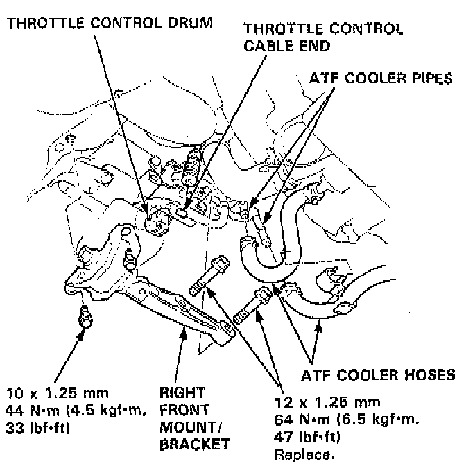
12. Connect the throttle control cable to the throttle control drum, and install the right front mount/bracket.
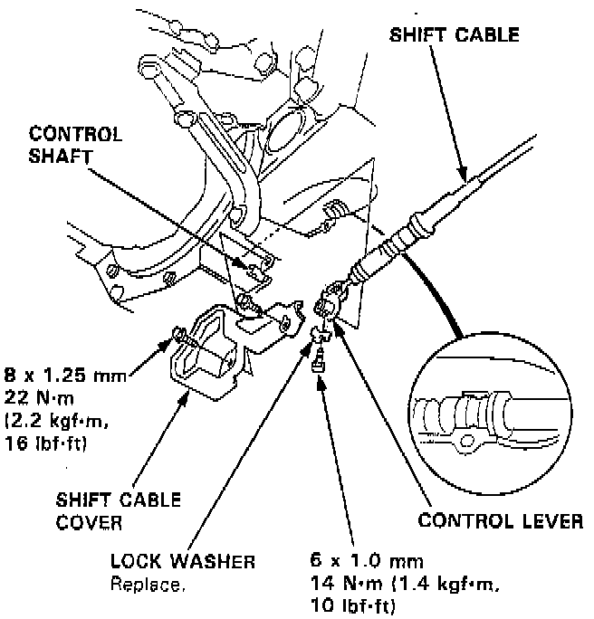
13. Install the control lever with a new lock washer to the control shaft, then install the shift cable cover.
CAUTION: Take care not to bend the shift cable.
14. Install new set rings on the end of the intermediate shaft and the driveshaft.
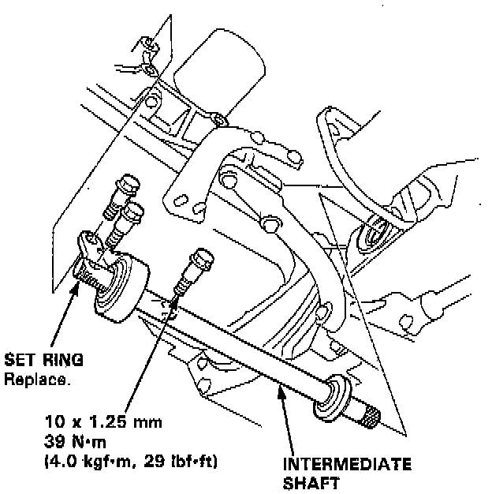
15. Install the intermediate shaft.
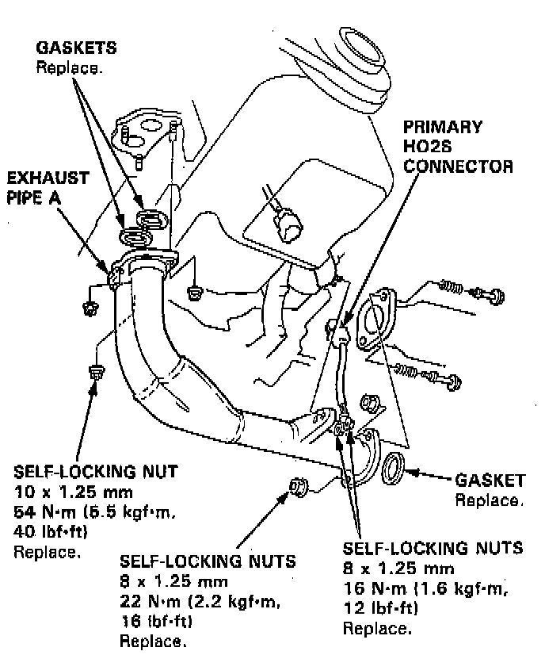
16. Install exhaust pipe A, and connect the heated oxygen sensor (H02S) connector.
17. Install the right and left driveshafts.
NOTE: Turn the right and left steering knuckle fully outward, and slide the right driveshaft into the differential until you feel its spring clip engage the side gear. Slide the left driveshaft into the intermediate shaft until you feel the spring clip of the intermediate shaft engage the driveshaft.
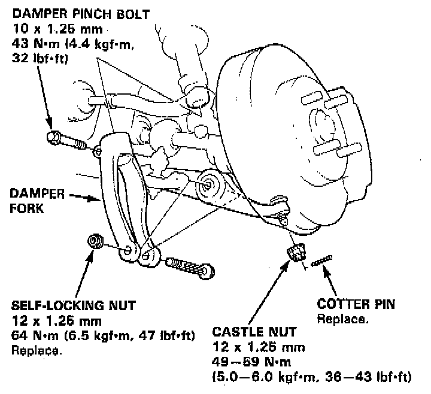
18. Install right damper fork, then install the right and left ball joints to each lower arm with the castle nuts and new cotter pins.
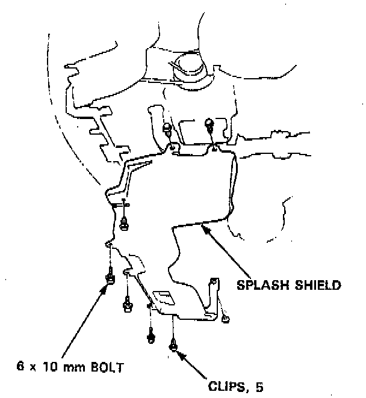
19. Install the splash shield.
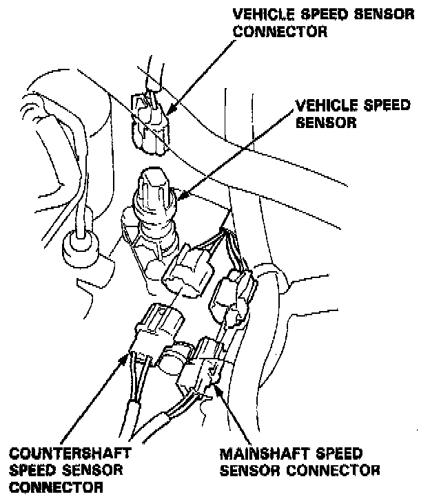
20. Connect the Vehicle Speed Sensor (VSS), mainshaft speed sensor and countershaft speed sensor connectors.
21. Connect the lock-up control solenoid valve connector and shift control solenoid valve connector, then clamp the lock-up control solenoid harness with the harness bracket/stay.
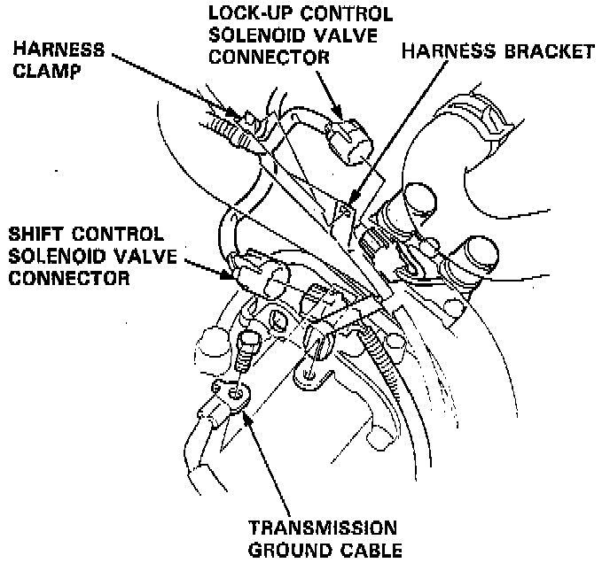
22. Connect the transmission ground cable.
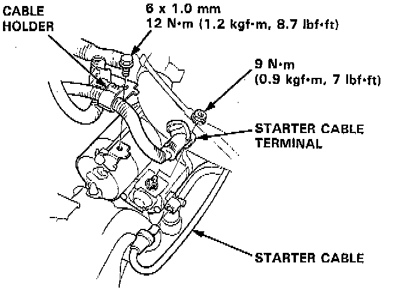
23. Connect the starter cable to the starter motor, and install the cable holder.
NOTE: When installing the starter motor cable, make sure that the crimped side of the ring terminal is facing out.
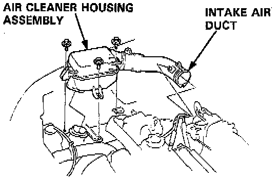
24. Install the air cleaner housing assembly and intake air duct.
25. Refill the transmission with ATF.
26. Connect the battery positive ( + ) and negative ( - ) cables to the battery.
27. Start the engine. Set the parking brake, and shift the transmission through all gears three times.
28. Check shift cable adjustment.
29. Check the front wheel alignment.
30. Let the engine reach operating temperature (the cooling fan comes on) with the transmission in N or P position, then turn it off and check the fluid level.
31. Road test.